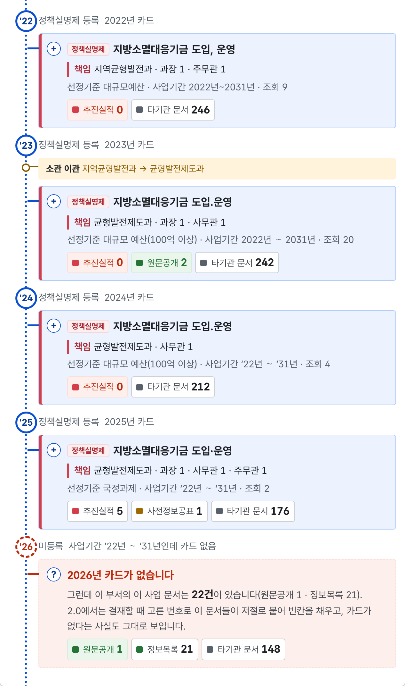

누가 맡았나 ·
무엇을 결정했나국민은 어디서 볼 수 있을까요
세 제도는 서로 다르고,
서로를 보완합니다단위가 다릅니다 — 사업 · 항목 · 문서
hosungseo.github.io /open-go-corpus/report.html#비교
2 비교
세 제도 비교표
단위
사업 1건 · 항목 1줄 · 문서 1건
근거 조문
행정업무규정 §63 · 정보공개법 §7 · §8의2
책임자
사업별 실명 · 부서까지 · 문서별 결재선
입구
문이 셋으로
갈립니다
정책실명제 기관을 먼저 고른다
사전정보공표 · 원문공개 검색으로 찾는다
첫째 · 정책실명제
행정업무규정 §63
행정기관은 주요 정책의 결정·집행 과정에 참여한 관련자의 실명을 기록·관리하고 공개한다
대통령령 · 행정안전부 소관 · 사업 1건이 단위
둘째 · 사전정보공표
정보공개법 §7
공공기관은 국민이 알아야 할 필요가 있는 정보를 청구가 없더라도 미리 공개한다 — 행정정보의 사전적 공표
법률 · 정보 항목 1줄이 단위
셋째 · 원문공개
정보공개법 §8의2
중앙행정기관 등은 전자적 형태로 보유·관리하는 공개대상 정보를 정보통신망을 통해 원문으로 공개한다
법률 · 결재문서 1건이 단위
hosungseo.github.io /open-go-corpus/report.html#같은사업
4 같은 사업
세 질문, 세 답
누가 맡았나 — 정책실명제
어떻게 배분받나 — 사전정보공표
언제 무엇을 결정했나 — 원문공개
2026년 카드 없음 · 문서 22건
원문 0 — 있는데 못 보는 문서
2.0 구상 · 아직 하지 않는 일

정책실명제 — 뼈대사업 단위 · 책임자 · 해마다 카드
사전정보공표 — 안내누리집 항목이 카드에 붙음
원문공개 — 문서결재문서가 생산 연도에 붙음
사전정보공표 1
원문공개 2
원문공개 1 · 정보목록 21
hosungseo.github.io /open-go-corpus/report.html#2.0
실제 화면 · 2.0 구상
카드의 한 줄을 누르면
정책실명제 조치 ’25.10.28
「배분 기준」 개정(안) 보고
원문공개 같은 이름의
2023년 결재문서가 열립니다
정책실명제 명부사업 단위 · 책임자
사전정보공표 안내항목 단위
원문공개 문서결재문서 · 결재선
열쇠국정과제 54세부과제 54-1 · 결재할 때 고름
한 사업
지방소멸대응기금
책임자 · 해마다 카드누리집 안내결재문서 · 원문
세 제도는 서로 다르고,
서로를 보완합니다정책실명제만의 것 둘 — 사업 단위의 책임자 · 한 장의 명부
여기에 원문이 붙으면,
한 사업이 다 보입니다
같은 사업의 세 얼굴
정보공개 세 제도 실측
정책실명제사전정보공표원문공개
hosungseo.github.io/open-go-corpus
행정업무규정 §63 · 정보공개법 §7 · 정보공개법 §8의2
담당자 세 사람의 실명 — 세 제도 가운데 정책실명제만
사전정보공표 — 포털에는 한 줄, 내용은 부처 누리집
절차는 있지만 결정과 사람은 없다 — 예정표이지 기록이 아님
원문공개 — 본문 PDF와 붙임까지 그대로 열린다
국정과제 번호 하나로 — 세 제도가 한 사업에
정책실명제만의 것 — 사업 단위 책임자 · 한 장의 명부